P1. 컴퓨터만으로 하는 첫 실험
심장 신호를 거칠게 숫자로 바꾸면 박동을 놓칠까? 기억(memory)은 길수록 좋을까? VS Code에서 코드를 돌리며 내 눈으로 확인합니다
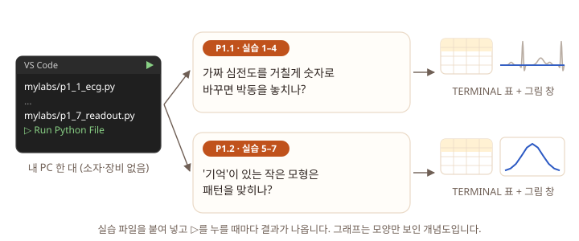
무엇을 하나 VS Code에서 짧은 실습 코드 7개를 하나씩 붙여 넣고 ▷를 누릅니다. 가짜 심장 신호를 만들고(실습 1), 숫자로 바꾸고(2·3), 박동을 찾아 채점하고(4), 기억 과제를 만들어(5) 작은 '기억 모형'에 넣고(6) 맞혀 봅니다(7). 장비·소자는 필요 없습니다.
이 프로젝트를 끝내면 얻는 것 (1) 박동을 하나도 놓치지 않는 가장 작은 설정(숫자 하나). (2) "기억은 길이가 맞아야 쓸모 있다"를 보여 주는 그래프 한 장. 그리고 코드 맨 위 숫자를 바꿔 가며 결과가 어떻게 달라지는지 직접 본 경험.
왜 하나 P2부터는 진짜 소자를 잽니다. 그 전에 "소자 없이 설정만 바꿔도 결과가 이만큼 달라진다"를 숫자로 알아 둬야, 나중에 소자가 한 몫을 가려낼 수 있습니다.
- 준비VS Code · mylabs 폴더
- →
- P1.1 신호를 숫자로실습 1–4 · 학습 약 60분
- →
- P1.2 기억의 길이실습 5–7 · 학습 약 50분
- →
- 끝맨 아래 [완료] 단추
실습 7개를 모두 ▷ 실행하고 결과 그림을 확인하면 끝입니다. "관찰 적기" 질문은 머릿속으로 답해 보고 '정답 보기'로 확인하면 충분하고, 글로 적는 것은 선택입니다. 결과가 예상과 달라도 괜찮습니다.
준비: VS Code와 mylabs 폴더
처음이라면 처음 한 번: 내 컴퓨터 준비하기를 먼저 끝냅니다. 그 페이지 끝에서 p0_hello.py를 ▷ 실행해 사인 곡선이 떴다면 준비가 된 것입니다.
모든 실습은 같은 순서입니다. VS Code 왼쪽 EXPLORER의 mylabs 폴더에 마우스 오른쪽 단추 → New File → 실습마다 적힌 파일 이름(예: p1_1_ecg.py) → 코드 상자 오른쪽 위 복사 아이콘 → 편집기에 Ctrl+V → Ctrl+S → 오른쪽 위 ▷. 결과 글자는 아래 TERMINAL에, 그래프는 따로 뜨는 그림 창에 나옵니다. 그림 창을 닫아야 프로그램이 끝납니다.
P1.1. 신호를 숫자로 바꿀 때, 어디까지 줄여도 될까
몸에 붙이는 작은 심전도 패치를 떠올려 보세요. 패치는 심장이 만드는 아주 작은 전압을 숫자로 바꿔서 휴대폰으로 보냅니다. 숫자를 많이, 자세히 만들수록 정확하지만 보낼 양이 많아져 전지가 빨리 닳습니다. 그래서 묻습니다. 얼마나 적게, 얼마나 거칠게 만들어도 심장이 뛴 순간을 놓치지 않을까?
P1.1은 이 질문을 네 걸음으로 풉니다.
| 실습 | 하는 일 | 결과로 보는 것 |
|---|---|---|
| 1 | 가짜 심전도 만들기 | 심장 신호가 어떻게 생겼나, 정답(박동 시각) |
| 2 | sampling rate: 몇 번 집나 | 점이 듬성하면 봉우리를 놓친다 |
| 3 | bit: 얼마나 자세히 적나 | 눈금이 거칠면 작은 물결이 사라진다 |
| 4 | 박동 찾기와 채점 | 25가지 설정에서 놓친 수 지도 |
실습 1. 가짜 심전도 만들기 (p1_1_ecg.py)
진짜 환자 기록 대신 수식으로 그린 가짜 심전도를 만듭니다. 가짜를 쓰는 이유는 하나입니다. 심장이 언제 뛰었는지(정답)를 우리가 정확히 알기 때문에, 다음 실습들에서 "박동을 맞게 찾았나"를 채점할 수 있습니다.
심전도는 박동마다 P·Q·R·S·T라는 물결 다섯 개가 이어집니다. 그중 크고 뾰족한 R 봉우리가 "심장이 뛰었다"는 표시이고, 박동 찾기는 이 봉우리를 찾는 일입니다.
할 일 mylabs에 새 파일 p1_1_ecg.py → 아래 코드 붙여 넣기 → Ctrl+S → ▷.
mylabs/p1_1_ecg.py
# ============================================================
# P1 실습 1 · 가짜 심전도(synthetic ECG) 만들고 보기
#
# 전체 과정:
#
# 심장이 뛰는 시각 정하기 (1분에 62–88번)
# ↓
# 박동마다 P · Q · R · S · T 물결을 더하기
# ↓
# 숨 쉴 때 흔들리는 기준선 + 작은 noise 더하기
# ↓
# 그래프로 보기
#
# 이 신호는 진짜 환자 기록이 아니라 수식으로 그린 것입니다.
# 그래서 "심장이 언제 뛰었는지(정답)"를 우리가 정확히 압니다.
# 다음 실습들은 이 정답을 기준으로 채점합니다.
# ============================================================
import numpy as np
import matplotlib.pyplot as plt
# ============================================================
# 0. 그림 설정 (한글 글꼴 · 글씨 크기) — 건드리지 않아도 됩니다
# ============================================================
plt.rcParams.update({
"font.family": "Malgun Gothic", # Windows 기본 한글 글꼴
"axes.unicode_minus": False, # 마이너스(-)가 깨지지 않게
"font.size": 11,
"legend.frameon": False, # 범례 테두리 없음
"axes.spines.top": False,
"axes.spines.right": False,
})
# ============================================================
# 1. 바꿔 볼 수 있는 설정값
# ============================================================
SECONDS = 10 # 신호 길이 (초)
SEED = 1 # 무작위 '씨앗'. 같은 SEED면 언제 돌려도 같은 신호
SHOW_SECONDS = 3 # 그래프에 보여 줄 앞부분 길이 (초)
# 컴퓨터 안에서 "원래 신호"를 그리는 촘촘함.
# 1초에 2000개 점 = 0.5 ms마다 점 하나 → 사람 눈에는 매끈한 곡선.
REF_FS = 2000
# ============================================================
# 2. 심장이 뛰는 시각 정하기
# ============================================================
rng = np.random.default_rng(SEED)
beat_times = [] # 정답: 심장이 뛴 시각 (초)
now = 0.4 # 첫 박동은 0.4초에
while now < SECONDS - 0.6:
beat_times.append(now)
# 다음 박동까지의 간격.
# 1분에 62–88번 뛰므로 간격은 60/88 ≈ 0.68초 ~ 60/62 ≈ 0.97초.
beats_per_minute = rng.uniform(62, 88)
now += 60 / beats_per_minute
beat_times = np.array(beat_times)
# ============================================================
# 3. 박동마다 물결 다섯 개(P, Q, R, S, T) 더하기
# ============================================================
#
# P: 작은 언덕 (심방이 수축) 높이 0.12 mV
# Q: 작은 골짜기 -0.12 mV
# R: 크고 뾰족한 봉우리 (심실 수축) 1.0 mV ← 박동 찾기에 쓰는 것
# S: 골짜기 -0.25 mV
# T: 넓은 언덕 (회복) 0.3 mV
#
# 물결 하나 = 종 모양(가우스) 곡선.
# (박동 기준 몇 초 뒤, 높이 mV, 폭 초)
# ============================================================
WAVES = [
(-0.180, 0.12, 0.025), # P
(-0.025, -0.12, 0.008), # Q
( 0.000, 1.00, 0.009), # R
( 0.025, -0.25, 0.009), # S
( 0.280, 0.30, 0.045), # T
]
t = np.arange(int(SECONDS * REF_FS)) / REF_FS # 시간 축 (초)
ecg = np.zeros_like(t) # 처음엔 0 mV
for b in beat_times:
for shift, height, width in WAVES:
ecg += height * np.exp(-0.5 * ((t - b - shift) / width) ** 2)
# ============================================================
# 4. 실제 신호처럼 흔들림 더하기
# ============================================================
# 숨 쉴 때 몸이 움직여 기준선이 천천히 오르내림 (0.3 Hz = 3.3초에 한 번)
ecg += 0.15 * np.sin(2 * np.pi * 0.3 * t)
# 전극·근육에서 오는 작은 noise (표준편차 0.02 mV)
ecg += rng.normal(0, 0.02, t.size)
# ============================================================
# 5. 숫자로 확인
# ============================================================
print("=" * 50)
print("synthetic ECG")
print("=" * 50)
print(f"length : {SECONDS} s")
print(f"points : {t.size} (1초에 {REF_FS}개)")
print(f"true beats : {len(beat_times)}")
print(f"heart rate : {len(beat_times) / SECONDS * 60:.0f} beats/min")
print(f"first 3 beats : {np.round(beat_times[:3], 3)} s")
print(f"min / max value : {ecg.min():.2f} / {ecg.max():.2f} mV")
# ============================================================
# 6. 그래프: 앞부분 SHOW_SECONDS초
# ============================================================
show = t < SHOW_SECONDS
fig, ax = plt.subplots(figsize=(8, 3.6))
ax.plot(t[show], ecg[show], color="0.35", lw=1.2, label="synthetic ECG")
# 정답 박동 시각에 빨간 ▼ (R 봉우리 위)
b_show = beat_times[beat_times < SHOW_SECONDS]
ax.plot(b_show, np.full(len(b_show), 1.25), "v", color="#c0392b", ms=8,
label="정답: 심장이 뛴 시각")
# 첫 박동의 물결 이름 붙이기
b0 = beat_times[0]
# 글자는 실제 신호 높이에서 조금 위(+) 또는 아래(−)에 둔다 (기준선이 흔들려도 맞게)
LABEL_AT = {"P": (-0.18, +0.10), "Q": (-0.03, -0.20), "R": (0.012, -0.12),
"S": (0.03, -0.18), "T": (0.28, +0.10)} # (박동 기준 몇 초, 위아래 띄우기 mV)
for name, (dx, dy) in LABEL_AT.items():
y = ecg[int((b0 + dx) * REF_FS)] + dy
ax.text(b0 + dx + (0.015 if name == "R" else 0), y, name, ha="left" if name == "R" else "center",
va="bottom" if dy > 0 else "top", color="#2b59c3", fontweight="bold")
ax.set_ylim(-0.6, 1.55)
ax.set_xlabel("time (s)")
ax.set_ylabel("mV")
ax.set_title("가짜 심전도: 박동마다 P·Q·R·S·T 물결", loc="left")
ax.legend(loc="upper right", ncol=2, bbox_to_anchor=(1.0, 1.16))
fig.tight_layout()
plt.show() # 그림 창이 뜹니다. 창을 닫으면 프로그램이 끝납니다.코드에서 볼 곳.
- 1번 상자(설정값):
SECONDS,SEED처럼 대문자로 쓴 숫자가 바꿔 볼 수 있는 값입니다. 모든 실습이 이렇게 맨 위에 모아 둡니다. - 2번 상자: 박동 사이 간격을 1분에 62–88번 사이에서 무작위로 정합니다. 그래서 박동 간격이 조금씩 다릅니다.
beat_times에 쌓인 시각이 정답입니다. - 3번 상자의
WAVES표: 물결 다섯 개의 위치·높이·폭입니다. R은 높이 1.0 mV, 폭 0.009초로 아주 좁고 높습니다. 이 "좁다"가 실습 2의 핵심이 됩니다.
▷ 실행하면 TERMINAL에 이렇게 찍히고 그림 창이 뜹니다.
PS C:\Users\내이름\Desktop\ion-projects-code> & python mylabs/p1_1_ecg.py
==================================================
synthetic ECG
==================================================
length : 10 s
points : 20000 (1초에 2000개)
true beats : 12
heart rate : 72 beats/min
first 3 beats : [0.4 1.197 1.889] s
min / max value : -0.42 / 1.18 mV
PS C:\Users\내이름\Desktop\ion-projects-code>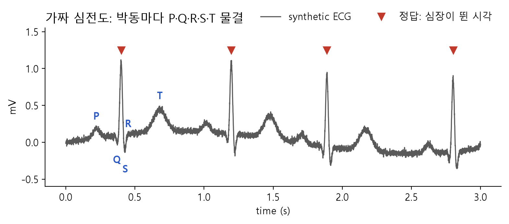
결과가 뜻하는 것. 10초 동안 박동 12개, 분당 72번입니다. R 봉우리는 폭이 수십 ms(1 ms = 1000분의 1초)밖에 안 되는 바늘 같은 모양입니다. 다음 실습에서 이 바늘을 컴퓨터가 "집을" 수 있는지 봅니다.
ECG (electrocardiogram, 심전도): 심장이 뛸 때 몸 표면에 생기는 작은 전압(약 1 mV)을 시간에 따라 그린 것.
seed: 가짜 신호를 만드는 무작위 수의 "씨앗" 번호. 같은 seed면 언제 돌려도 똑같은 신호가 나와서, 내 결과를 이 페이지의 숫자와 비교할 수 있습니다.
SEED = 1을 SEED = 2로 바꾸고 Ctrl+S → ▷. 박동 간격과 개수가 조금 달라집니다. 다시 1로 돌려놓으면 처음과 똑같아집니다.
실습 2. sampling rate: 1초에 몇 번 값을 집을까 (p1_2_sampling.py)
컴퓨터는 신호를 연속으로 보지 못합니다. 일정한 간격마다 그 순간의 값을 하나씩 집어서 숫자로 적습니다. 1초에 몇 번 집는지가 sampling rate입니다. 생각하신 대로, 25 Hz는 1초에 25번, 곧 40 ms마다 한 번 값을 집습니다.
이 실습은 집는 간격이 넓으면 실습 1의 바늘 같은 R 봉우리를 건너뛰어 버리는지를 그림으로 봅니다.
sampling rate (단위 Hz): 1초에 값을 몇 번 집는지. 100 Hz = 1초에 100번 = 10 ms마다 한 번. 집은 값 하나를 sample이라고 합니다.
할 일 mylabs에 새 파일 p1_2_sampling.py → 붙여 넣기 → Ctrl+S → ▷.
mylabs/p1_2_sampling.py
# ============================================================
# P1 실습 2 · sampling rate: 1초에 몇 번 값을 집을까
#
# 전체 과정:
#
# 실습 1과 같은 가짜 심전도 (원래 신호, 1초에 2000점)
# ↓
# FS Hz로 값 집기 = 1/FS 초마다 점 하나만 남기기
# ↓
# R 봉우리(박동)마다 "기준선보다 0.5 mV 높은 선 위에 점이 찍혔나?" 세기
# ↓
# 그래프: 매끈한 원래 신호 vs 컴퓨터가 가진 점들
#
# 맨 위의 FS 숫자를 바꿔 다시 Run 해 보는 것이 이 실습의 핵심입니다.
# ============================================================
import numpy as np
import matplotlib.pyplot as plt
# ============================================================
# 0. 그림 설정 — 건드리지 않아도 됩니다
# ============================================================
plt.rcParams.update({
"font.family": "Malgun Gothic", "axes.unicode_minus": False, "font.size": 11,
"legend.frameon": False, "axes.spines.top": False, "axes.spines.right": False,
})
# ============================================================
# 1. 바꿔 볼 수 있는 설정값 ← 여기를 바꿔 보세요
# ============================================================
FS = 25 # sampling rate (Hz): 1초에 값을 몇 번 집나. 25, 50, 100, 250, 500 …
THRESHOLD = 0.5 # 박동 판정 선: 봉우리 앞 기준선보다 몇 mV 높아야 하나. 실습 4에서 자세히
SECONDS = 60 # 신호 길이 (초)
SEED = 1
# ============================================================
# 2. 가짜 심전도 만들기 (실습 1과 같은 코드)
# ============================================================
REF_FS = 2000 # 원래 신호의 촘촘함: 1초에 2000점
def make_ecg(seconds, seed):
"""가짜 심전도(mV)와 정답 박동 시각(초)을 돌려준다."""
rng = np.random.default_rng(seed)
beats, now = [], 0.4
while now < seconds - 0.6:
beats.append(now)
now += 60 / rng.uniform(62, 88)
t = np.arange(int(seconds * REF_FS)) / REF_FS
x = np.zeros_like(t)
for b in beats:
for shift, height, width in [(-0.18, 0.12, 0.025), (-0.025, -0.12, 0.008), (0, 1.0, 0.009),
(0.025, -0.25, 0.009), (0.28, 0.3, 0.045)]:
x += height * np.exp(-0.5 * ((t - b - shift) / width) ** 2)
x += 0.15 * np.sin(2 * np.pi * 0.3 * t) + rng.normal(0, 0.02, t.size)
return t, x, np.array(beats)
t, ecg, beats = make_ecg(SECONDS, SEED)
# ============================================================
# 3. FS Hz로 값 집기 (sampling)
# ============================================================
#
# 원래 신호는 0.5 ms마다 점이 있다 (2000 Hz).
# FS = 25 Hz면 2000 / 25 = 80칸마다 하나만 남긴다
# → 40 ms마다 점 하나.
# ============================================================
if REF_FS % FS != 0:
raise SystemExit(f"FS = {FS}: 2000을 나누어떨어지게 하는 수만 됩니다 (25, 40, 50, 80, 100, 125, 200, 250, 400, 500 …)")
step = REF_FS // FS
ts = t[::step] # 집은 순간의 시각
xs = ecg[::step] # 집은 값
interval_ms = 1000 / FS
# ============================================================
# 4. 박동마다: R 봉우리 근처(±30 ms)에 "기준선 + 0.5 mV" 선을 넘는 점이 있나?
# ============================================================
#
# 기준선이 흔들리므로, 봉우리 바로 앞 0.2초의 평균을 빼고 본다.
# (실습 4의 박동 찾기와 같은 방식)
# ============================================================
caught = 0
caught_flag = [] # 박동마다 잡았나(True) 놓쳤나(False)
for b in beats:
near = np.abs(ts - b) <= 0.03 # 봉우리 ±30 ms 안의 점들
base = xs[(ts > b - 0.25) & (ts < b - 0.05)] # 봉우리 앞 기준선
base = base.mean() if len(base) else 0
ok = bool(near.any() and (xs[near] - base).max() > THRESHOLD)
caught_flag.append(ok)
caught += ok
print("=" * 50)
print(f"sampling rate {FS} Hz")
print("=" * 50)
print(f"interval between samples : {interval_ms:.0f} ms")
print(f"samples in {SECONDS} s : {len(xs)}")
print(f"true beats : {len(beats)}")
print(f"beats with a sample above baseline + {THRESHOLD} mV : {caught} / {len(beats)}")
print(f"beats missed by sampling : {len(beats) - caught}")
# ============================================================
# 5. 그래프: "잡은 박동" 하나와 "놓친 박동" 하나를 크게
# ============================================================
#
# 놓친 박동이 없으면(FS가 충분히 높으면) 처음 두 박동을 보여 준다.
# ============================================================
caught_flag = np.array(caught_flag)
pick = []
if caught_flag.any():
pick.append((beats[caught_flag][0], "잡은 박동 (예)"))
if (~caught_flag).any():
pick.append((beats[~caught_flag][0], "놓친 박동 (예)"))
while len(pick) < 2:
pick.append((beats[len(pick)], "잡은 박동 (예)"))
fig, axs = plt.subplots(1, 2, figsize=(8, 3.6), sharey=True)
for ax, (b, title) in zip(axs, pick):
lo, hi = b - 0.15, b + 0.15 # 봉우리 앞뒤 0.15초
m = (t >= lo) & (t <= hi)
ms = (ts >= lo) & (ts <= hi)
# 판정 선: 봉우리 앞 기준선 + THRESHOLD. 파란 점이 이 선을 넘어야 '박동'으로 잡힌다
base_b = ecg[(t > b - 0.25) & (t < b - 0.05)].mean()
ax.axhline(base_b + THRESHOLD, color="#d9962a", ls="--", lw=1.3, label=f"판정 선 (기준선 + {THRESHOLD} mV)")
ax.plot((t[m] - b) * 1000, ecg[m], color="0.75", lw=2, label="원래 신호")
ax.vlines((ts[ms] - b) * 1000, -0.4, xs[ms], color="#2b59c3", lw=1)
ax.plot((ts[ms] - b) * 1000, xs[ms], "o", color="#2b59c3", ms=5, label=f"집은 값 ({FS} Hz)")
ax.set_xlabel("R 봉우리 기준 시간 (ms)")
ax.set_ylim(-0.4, 1.3)
ax.set_title(title, loc="left")
axs[0].set_ylabel("mV")
fig.suptitle(f"{FS} Hz = {interval_ms:.0f} ms마다 점 하나: 봉우리를 집었나?", x=0.02, ha="left", fontsize=12)
fig.tight_layout(rect=(0, 0.08, 1, 1))
# 범례는 그래프 아래 한 줄에 (그래프·제목과 겹치지 않게)
fig.legend(*axs[0].get_legend_handles_labels(), loc="lower center", ncol=3, bbox_to_anchor=(0.5, 0.0))
plt.show()코드에서 볼 곳.
- 2번 상자: 실습 1과 같은 가짜 심전도를
make_ecg라는 이름으로 묶어 두었습니다(함수). 이번에는 60초, 박동 74개. - 3번 상자의
ecg[::step]: "step칸마다 하나씩만 남겨라"라는 뜻입니다. 원래 신호는 1초에 2000점이므로 FS = 25면 2000 ÷ 25 = 80칸마다 하나, 곧 40 ms마다 점 하나입니다. 이것이 sampling의 전부입니다. - 4번 상자: 박동마다 봉우리 ±30 ms 안에 판정 선을 넘는 점이 하나라도 있는지 셉니다. 없으면 그 박동은 숫자 속에 봉우리가 아예 없다는 뜻입니다. 판정 선은 0 mV에서 잰 0.5 mV가 아니라 봉우리 바로 앞 기준선보다 0.5 mV 높은 곳입니다. 예: 숨 때문에 기준선이 0.12 mV로 떠 있으면 판정 선은 0.62 mV. 그래서 그림의 주황 점선 높이는 박동마다 조금씩 다릅니다.
▷ 실행하면:
PS C:\Users\내이름\Desktop\ion-projects-code> & python mylabs/p1_2_sampling.py
==================================================
sampling rate 25 Hz
==================================================
interval between samples : 40 ms
samples in 60 s : 1500
true beats : 74
beats with a sample above baseline + 0.5 mV : 29 / 74
beats missed by sampling : 45
PS C:\Users\내이름\Desktop\ion-projects-code>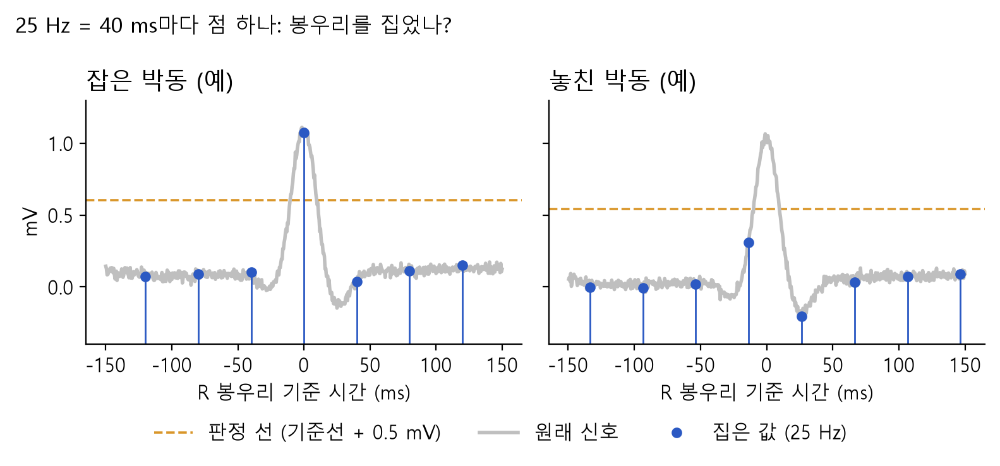
결과가 뜻하는 것. 박동 74개 중 29개만 점이 봉우리를 집었고 45개는 건너뛰었습니다. R 봉우리가 판정 선 위에 있는 시간은 약 20 ms인데 점 간격이 40 ms라서, 점이 그 20 ms 안에 떨어질지는 운입니다.
FS = 25를 FS = 100으로 바꾸고 Ctrl+S → ▷. 무엇이 달라질지 먼저 예상해 보고 누르세요.
점 간격이 10 ms로 좁아져 모든 박동에서 점이 봉우리 위에 찍힙니다. TERMINAL의 마지막 두 줄이 이렇게 바뀝니다.
PS C:\Users\내이름\Desktop\ion-projects-code> & python mylabs/p1_2_sampling.py
==================================================
sampling rate 100 Hz
==================================================
interval between samples : 10 ms
samples in 60 s : 6000
true beats : 74
beats with a sample above baseline + 0.5 mV : 74 / 74
beats missed by sampling : 0
PS C:\Users\내이름\Desktop\ion-projects-code>FS = 50도 해 보면 중간쯤(놓친 박동 수가 줄지만 0은 아님)이 나옵니다. FS = 30처럼 2000을 나누어떨어지게 하지 않는 수는 거부됩니다(25, 40, 50, 80, 100, 125, 200, 250, 400, 500 …).
실습 3. bit: 집은 값을 얼마나 자세히 적을까 (p1_3_bits.py)
집은 값은 눈금자에 대고 읽는 것과 같습니다. 눈금이 8개뿐인 자로 재면 0.37 mV가 "0.5 mV쯤"으로 적히고, 눈금이 4,096개인 자로 재면 "0.370 mV"로 적힙니다. bit는 이 자에 눈금이 몇 개 있는지를 정합니다.
이 실습은 sampling rate는 넉넉히(500 Hz) 고정해 두고 bit만 바꿔서, 거친 눈금이 작은 물결(P wave)을 지워 버리는지 봅니다.
왜 "bit"라고 부를까. 컴퓨터는 숫자를 0과 1로만 적습니다. 0 또는 1 한 자리가 bit 하나입니다. 3자리(3 bit)로 적을 수 있는 숫자는 000, 001, 010, … , 111의 8가지(2×2×2)뿐이라 눈금도 8칸입니다. 12 bit면 2를 12번 곱한 4,096가지입니다.
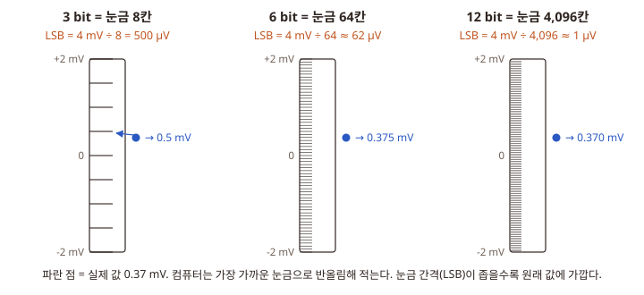
bit: 숫자 하나를 0과 1 몇 자리로 적는지. 눈금 수 = 2bit. 3 bit = 8칸, 12 bit = 4,096칸.
LSB (Least Significant Bit, 가장 낮은 자리 bit): 눈금 한 칸의 크기. 이 코드는 −2 mV부터 +2 mV까지 폭 4 mV를 나누므로 LSB = 4 mV ÷ 눈금 수. 3 bit면 4 ÷ 8 = 0.5 mV = 500 µV, 12 bit면 4 ÷ 4,096 ≈ 0.001 mV = 1 µV(µV = mV의 1,000분의 1). "12 bit에서 한 눈금이 1 µV"라는 말은 이 계산이고, sampling rate와는 상관없습니다.
할 일 mylabs에 새 파일 p1_3_bits.py → 붙여 넣기 → Ctrl+S → ▷.
mylabs/p1_3_bits.py
# ============================================================
# P1 실습 3 · bit: 집은 값을 얼마나 자세히 적을까
#
# 전체 과정:
#
# 가짜 심전도를 촘촘하게(500 Hz) 집기 ← 여기서는 sampling rate 걱정 없이
# ↓
# −2 mV ~ +2 mV를 눈금 2^BITS칸으로 나눈 '자' 만들기
# ↓
# 집은 값을 가장 가까운 눈금으로 반올림 (= 숫자로 적기)
# ↓
# 그래프: 원래 신호 vs 계단 모양으로 적힌 값
# 특히 작은 물결(P wave, 0.12 mV)이 살아남나?
#
# 맨 위의 BITS 숫자를 3 → 4 → 6 → 12로 바꿔 Run 해 보세요.
# ============================================================
import numpy as np
import matplotlib.pyplot as plt
# ============================================================
# 0. 그림 설정 — 건드리지 않아도 됩니다
# ============================================================
plt.rcParams.update({
"font.family": "Malgun Gothic", "axes.unicode_minus": False, "font.size": 11,
"legend.frameon": False, "axes.spines.top": False, "axes.spines.right": False,
})
# ============================================================
# 1. 바꿔 볼 수 있는 설정값 ← 여기를 바꿔 보세요
# ============================================================
BITS = 3 # 숫자 하나를 0과 1 몇 자리로 적나. 3, 4, 6, 8, 12 …
FS = 500 # sampling rate는 넉넉하게 고정 (bit 효과만 보려고)
RANGE_MV = 2.0 # 자의 범위: −2 mV ~ +2 mV (폭 4 mV)
SEED = 1
# ============================================================
# 2. 가짜 심전도 만들기 (실습 1·2와 같은 코드)
# ============================================================
REF_FS = 2000
def make_ecg(seconds, seed):
"""가짜 심전도(mV)와 정답 박동 시각(초)을 돌려준다."""
rng = np.random.default_rng(seed)
beats, now = [], 0.4
while now < seconds - 0.6:
beats.append(now)
now += 60 / rng.uniform(62, 88)
t = np.arange(int(seconds * REF_FS)) / REF_FS
x = np.zeros_like(t)
for b in beats:
for shift, height, width in [(-0.18, 0.12, 0.025), (-0.025, -0.12, 0.008), (0, 1.0, 0.009),
(0.025, -0.25, 0.009), (0.28, 0.3, 0.045)]:
x += height * np.exp(-0.5 * ((t - b - shift) / width) ** 2)
x += 0.15 * np.sin(2 * np.pi * 0.3 * t) + rng.normal(0, 0.02, t.size)
return t, x, np.array(beats)
t, ecg, beats = make_ecg(5, SEED)
step = REF_FS // FS
ts, xs = t[::step], ecg[::step] # 500 Hz로 집은 값
# ============================================================
# 3. '자' 만들기: 눈금 수와 눈금 한 칸(LSB)
# ============================================================
#
# bit 하나 = 0 또는 1, 두 가지
# BITS자리 = 2 × 2 × … (BITS번) = 2^BITS 가지 숫자
# → 폭 4 mV를 2^BITS칸으로 나눈다
#
# LSB (Least Significant Bit) = 눈금 한 칸의 크기
# ============================================================
levels = 2 ** BITS
lsb = 2 * RANGE_MV / levels # mV
# ============================================================
# 4. 반올림해서 적기 (quantization)
# ============================================================
#
# 값 ÷ LSB → 가장 가까운 정수로 반올림 → 다시 × LSB
# 예) 3 bit, LSB 0.5 mV: 0.37 mV → 0.74 → 1 → 0.5 mV
# 자의 범위를 넘는 값은 끝 눈금에 붙는다 (clip)
# ============================================================
code = np.round(xs / lsb)
code = np.clip(code, -levels // 2, levels // 2 - 1)
xq = code * lsb
# ============================================================
# 5. P wave가 살아남았나 확인
# ============================================================
#
# P wave = 박동 0.18초 앞의 작은 언덕 (높이 약 0.12 mV).
# 언덕 꼭대기와 그 앞(0.1초 전)의 차이를 원래 값과 적힌 값에서 비교한다.
# ============================================================
def p_height(x_values):
out = []
for b in beats[:5]:
top = x_values[np.argmin(np.abs(ts - (b - 0.18)))]
before = x_values[np.argmin(np.abs(ts - (b - 0.28)))]
out.append(top - before)
return np.mean(out)
print("=" * 50)
print(f"{BITS} bit")
print("=" * 50)
print(f"levels (눈금 수) : {levels:,}")
print(f"LSB (눈금 한 칸) : {lsb * 1000:.1f} uV")
print(f"largest rounding error : {np.abs(xq - xs).max() * 1000:.1f} uV")
print(f"P wave height, original : {p_height(xs) * 1000:.0f} uV")
print(f"P wave height, recorded : {p_height(xq) * 1000:.0f} uV")
# ============================================================
# 6. 그래프: 박동 하나를 크게 (P · R · T가 다 보이게)
# ============================================================
b = beats[1]
m = (ts > b - 0.32) & (ts < b + 0.45)
fig, ax = plt.subplots(figsize=(8, 3.8))
# 눈금선: 이 범위에 들어오는 눈금만 (너무 촘촘하면 생략)
if levels <= 64:
for k in range(-levels // 2, levels // 2):
y = k * lsb
if -0.5 < y < 1.3:
ax.axhline(y, color="0.9", lw=0.8, zorder=0)
ax.plot((ts[m] - b) * 1000, xs[m], color="0.7", lw=2, label="원래 값")
ax.step((ts[m] - b) * 1000, xq[m], where="mid", color="#2b59c3", lw=1.6, label=f"{BITS} bit로 적은 값")
# P wave 위치에 화살표로 이름표 (데이터와 겹치지 않게 위쪽 빈 곳에서)
ax.annotate("P wave", xy=(-180, 0.25), xytext=(-180, 0.85), ha="center", color="#c0521c",
fontweight="bold", arrowprops=dict(arrowstyle="->", color="#c0521c"))
ax.set_xlabel("R 봉우리 기준 시간 (ms)")
ax.set_ylabel("mV")
ax.set_ylim(-0.5, 1.3)
ax.set_title(f"{BITS} bit = 눈금 {levels:,}칸, 한 칸(LSB) {lsb * 1000:.0f} µV", loc="left")
fig.tight_layout(rect=(0, 0.08, 1, 1))
fig.legend(*ax.get_legend_handles_labels(), loc="lower center", ncol=2) # 범례는 그래프 아래
plt.show()코드에서 볼 곳.
- 3번 상자:
levels = 2 ** BITS(눈금 수)와lsb = 4 mV ÷ levels(눈금 한 칸). 그림 3의 자를 만드는 두 줄입니다. - 4번 상자의
np.round(xs / lsb): 값을 눈금 한 칸으로 나눠 가장 가까운 정수로 반올림하는 것. 이것이 "숫자로 적기(quantization)"의 전부입니다. 예: 3 bit에서 0.37 mV ÷ 0.5 = 0.74 → 반올림 1 → 1 × 0.5 = 0.5 mV. - 5번 상자: P wave 높이를 원래 값과 적힌 값에서 비교합니다.
▷ 실행하면 (BITS = 3):
PS C:\Users\내이름\Desktop\ion-projects-code> & python mylabs/p1_3_bits.py
==================================================
3 bit
==================================================
levels (눈금 수) : 8
LSB (눈금 한 칸) : 500.0 uV
largest rounding error : 249.9 uV
P wave height, original : 142 uV
P wave height, recorded : 100 uV
PS C:\Users\내이름\Desktop\ion-projects-code>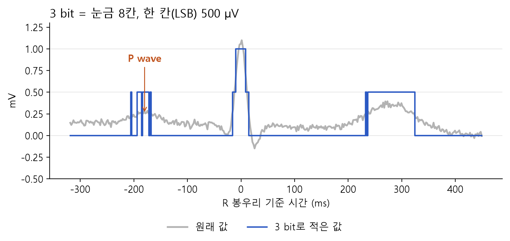
결과가 뜻하는 것. bit가 적으면 작은 것이 먼저 사라집니다. 반대로 R 봉우리처럼 큰 것은 거친 눈금으로도 남습니다. 그러니 "bit가 몇이면 충분한가"는 무엇을 보고 싶은가(큰 봉우리만? 작은 물결까지?)에 달려 있습니다.
BITS = 3을 4, 그다음 12로 바꿔 ▷. P wave가 언제부터 제 모양으로 보이나요?
4 bit(눈금 250 µV)에서도 P wave는 계단 한 칸짜리 평평한 언덕으로 뭉개집니다. 12 bit(눈금 1 µV)에서는 원래 값과 겹쳐 구별이 안 될 만큼 똑같습니다. TERMINAL의 P wave height, recorded도 12 bit에서야 원래 값(142 µV)과 같아집니다.
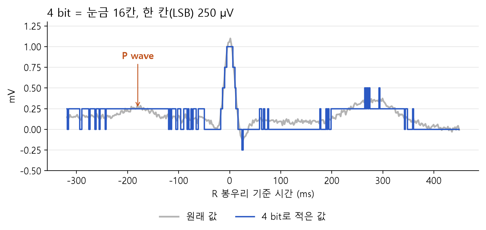
실습 4. 박동 찾기와 채점: 어디까지 줄여도 될까 (p1_4_detect.py)
실습 2(몇 번 집나)와 실습 3(얼마나 자세히 적나)을 합쳐서, 숫자로 바뀐 신호에서 박동을 찾고 정답과 비교해 채점합니다. 그리고 sampling rate 5가지 × bit 5가지 = 25가지 설정을 한꺼번에 채점해 지도로 그립니다. 이 지도가 P1.1의 최종 결과입니다.
박동 찾는 법: threshold. 프로그램은 가장 단순한 방법을 씁니다. 값이 기준선보다 정해 둔 만큼(0.5 mV) 넘게 솟으면 박동입니다. 심장이 뛸 때만 신호가 크게 솟기 때문에, 솟은 순간을 잡으면 박동을 찾을 수 있습니다.
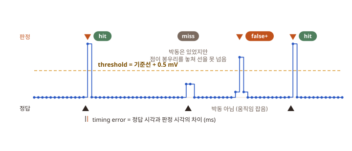
threshold: "이 값을 넘으면 사건이 일어났다"고 정해 둔 선. 여기서는 기준선보다 0.5 mV 높은 곳.
miss와 false+: 반대 방향의 실수입니다. miss는 있는 것을 못 본 실수(박동이 있었는데 못 찾음), false+(false positive)는 없는 것을 봤다고 한 실수(박동이 아닌 잡음을 박동이라고 함).
timing error: 박동을 찾았지만 그 시각이 정답과 평균 몇 ms 어긋났는지. 점이 듬성하면 꼭대기를 정확히 못 집으니 커집니다.
data rate (bit/s): sampling rate × bit. 1초에 만드는 0과 1의 개수. 100 Hz × 4 bit = 400 bit/s. 작을수록 보낼 것이 적어 전지가 오래 갑니다.
할 일 mylabs에 새 파일 p1_4_detect.py → 붙여 넣기 → Ctrl+S → ▷. 그림 창이 두 개 뜹니다. 둘 다 닫아야 끝납니다.
mylabs/p1_4_detect.py
# ============================================================
# P1 실습 4 · 박동 찾기와 채점: 어디까지 줄여도 될까
#
# 전체 과정:
#
# 가짜 심전도 60초 (정답 박동 74개)
# ↓
# FS Hz로 집고, BITS bit로 적기 (실습 2 + 실습 3)
# ↓
# 박동 찾기: 기준선을 빼고, THRESHOLD 선을 넘으면 '박동'
# ↓
# 정답과 비교: hit · miss · false+ · timing error
# ↓
# [그림 1] FS·BITS 한 가지 설정의 판정 결과 (4초 구간)
# [그림 2] sampling rate 5가지 × bit 5가지 = 25가지 설정의 miss 지도
# ============================================================
import numpy as np
import matplotlib.pyplot as plt
# ============================================================
# 0. 그림 설정 — 건드리지 않아도 됩니다
# ============================================================
plt.rcParams.update({
"font.family": "Malgun Gothic", "axes.unicode_minus": False, "font.size": 11,
"legend.frameon": False, "axes.spines.top": False, "axes.spines.right": False,
})
# ============================================================
# 1. 바꿔 볼 수 있는 설정값 ← 여기를 바꿔 보세요
# ============================================================
FS = 25 # sampling rate (Hz)
BITS = 3 # bit
THRESHOLD = 0.5 # 판정 선 (mV): 기준선보다 이만큼 높으면 박동
SECONDS = 60
SEED = 1
# 그림 2에서 한꺼번에 볼 설정들
FS_LIST = [25, 50, 100, 250, 500]
BITS_LIST = [3, 4, 6, 8, 12]
# ============================================================
# 2. 가짜 심전도 · 집기 · 적기 (실습 1–3과 같은 코드)
# ============================================================
REF_FS = 2000
def make_ecg(seconds, seed):
rng = np.random.default_rng(seed)
beats, now = [], 0.4
while now < seconds - 0.6:
beats.append(now)
now += 60 / rng.uniform(62, 88)
t = np.arange(int(seconds * REF_FS)) / REF_FS
x = np.zeros_like(t)
for b in beats:
for shift, height, width in [(-0.18, 0.12, 0.025), (-0.025, -0.12, 0.008), (0, 1.0, 0.009),
(0.025, -0.25, 0.009), (0.28, 0.3, 0.045)]:
x += height * np.exp(-0.5 * ((t - b - shift) / width) ** 2)
x += 0.15 * np.sin(2 * np.pi * 0.3 * t) + rng.normal(0, 0.02, t.size)
return t, x, np.array(beats)
def digitize(t, x, fs, bits, range_mv=2.0):
"""fs Hz로 집고 bits bit로 반올림해 적는다."""
step = REF_FS // fs
ts, xs = t[::step], x[::step]
lsb = 2 * range_mv / 2 ** bits
code = np.clip(np.round(xs / lsb), -(2 ** (bits - 1)), 2 ** (bits - 1) - 1)
return ts, code * lsb
# ============================================================
# 3. 박동 찾기 (detection)
# ============================================================
#
# ① 기준선 빼기: 0.2초 동안의 평균(= 천천히 흔들리는 기준선)을 뺀다
# ② 값이 THRESHOLD를 넘으면 → 거기서부터 오르막이 끝나는 꼭대기를 '박동 시각'으로
# ③ 한 번 찾으면 0.25초 동안은 다시 찾지 않는다
# (심장은 0.25초 안에 두 번 뛰지 못하므로. 이것을 refractory period라고 함)
# ============================================================
def detect(ts, xq, fs, threshold):
k = max(1, int(round(0.2 * fs)))
baseline = np.convolve(xq, np.ones(k) / k, mode="same") # ① 0.2초 이동평균
y = xq - baseline
found, i = [], 0
while i < len(y):
if y[i] > threshold: # ② 선을 넘음
j = i
while j + 1 < len(y) and y[j + 1] >= y[j]: # 꼭대기까지 올라가기
j += 1
found.append(ts[j])
i = j + max(1, int(0.25 * fs)) # ③ 0.25초 쉬기
else:
i += 1
return np.array(found)
# ============================================================
# 4. 채점 (정답과 비교)
# ============================================================
#
# 정답 박동마다 ±50 ms 안에 찾은 박동이 있으면 hit (짝을 지음)
# 짝이 없으면 miss (있는데 못 찾음)
# 짝을 못 지은 찾은 박동은 false+ (없는데 있다고 함)
# hit의 시각 차이 평균 = timing error
# ============================================================
def score(found, truth, tol=0.05):
used = np.zeros(len(found), bool)
hits, errors, missed = [], [], []
for b in truth:
d = np.abs(found - b)
cand = np.where((d <= tol) & ~used)[0]
if len(cand):
j = cand[np.argmin(d[cand])]
used[j] = True
hits.append(found[j])
errors.append(abs(found[j] - b))
else:
missed.append(b)
false_pos = found[~used]
err_ms = 1000 * np.mean(errors) if errors else float("nan")
return np.array(hits), np.array(missed), false_pos, err_ms
# ============================================================
# 5. 한 가지 설정 (FS, BITS)로 돌리기
# ============================================================
t, ecg, beats = make_ecg(SECONDS, SEED)
ts, xq = digitize(t, ecg, FS, BITS)
found = detect(ts, xq, FS, THRESHOLD)
hits, missed, false_pos, err_ms = score(found, beats)
print("=" * 50)
print(f"{FS} Hz x {BITS} bit (data rate {FS * BITS} bit/s)")
print("=" * 50)
print(f"true beats : {len(beats)}")
print(f"hit : {len(hits)}")
print(f"miss : {len(missed)}")
print(f"false+ : {len(false_pos)}")
print(f"timing error : {err_ms:.1f} ms")
# ============================================================
# 6. [그림 1] 판정 결과 보기: 처음 4초
# ============================================================
W = 4.0
m, ms = t < W, ts < W
fig, ax = plt.subplots(figsize=(8, 3.8))
ax.plot(t[m], ecg[m], color="0.8", lw=1.2, label="원래 신호")
ax.step(ts[ms], xq[ms], where="mid", color="#2b59c3", lw=1.3, label=f"{FS} Hz × {BITS} bit")
ax.plot(hits[hits < W], np.full((hits < W).sum(), 1.3), "v", color="#4f7f5d", ms=9, label="hit")
ax.plot(missed[missed < W], np.full((missed < W).sum(), 1.3), "x", color="#c0392b", ms=9, mew=2.5, label="miss")
ax.plot(false_pos[false_pos < W], np.full((false_pos < W).sum(), 1.3), "v", color="#d9962a", ms=9, label="false+")
ax.set_ylim(-0.6, 1.5)
ax.set_xlabel("time (s)")
ax.set_ylabel("mV")
ax.set_title(f"{FS} Hz × {BITS} bit: hit {len(hits)} · miss {len(missed)} · false+ {len(false_pos)} (74개 중)", loc="left")
fig.tight_layout(rect=(0, 0.08, 1, 1))
fig.legend(*ax.get_legend_handles_labels(), loc="lower center", ncol=5)
# ============================================================
# 7. [그림 2] 25가지 설정을 한꺼번에: miss 지도
# ============================================================
#
# 가로 = bit, 세로 = sampling rate. 칸 안의 숫자 = miss 개수.
# 진할수록 많이 놓침. 칸 아래 작은 숫자 = data rate (bit/s).
# ============================================================
miss_map = np.zeros((len(FS_LIST), len(BITS_LIST)), int)
print()
print("sampling rate bit data rate hit miss false+")
print(" (Hz) (bit/s)")
print("------------- --- --------- --- ---- ------")
for i, fs in enumerate(FS_LIST):
for j, bits in enumerate(BITS_LIST):
ts_ij, xq_ij = digitize(t, ecg, fs, bits)
h, mi, fp, _ = score(detect(ts_ij, xq_ij, fs, THRESHOLD), beats)
miss_map[i, j] = len(mi)
print(f" {fs:>3} {bits:>3} {fs * bits:>6} {len(h):>3} {len(mi):>3} {len(fp):>3}")
fig2, ax2 = plt.subplots(figsize=(8, 4.6))
ax2.imshow(miss_map, cmap="Reds", vmin=0, vmax=len(beats), aspect="auto")
for i, fs in enumerate(FS_LIST):
for j, bits in enumerate(BITS_LIST):
dark = miss_map[i, j] > 35
ax2.text(j, i - 0.1, f"{miss_map[i, j]}", ha="center", va="center", fontsize=13,
fontweight="bold", color="white" if dark else "#2f2521")
ax2.text(j, i + 0.27, f"{fs * bits:,} bit/s", ha="center", va="center", fontsize=8.5,
color="white" if dark else "0.4")
ax2.set_xticks(range(len(BITS_LIST)), [f"{b} bit" for b in BITS_LIST])
ax2.set_yticks(range(len(FS_LIST)), [f"{f} Hz" for f in FS_LIST])
ax2.set_xlabel("bit (값을 얼마나 자세히)")
ax2.set_ylabel("sampling rate (몇 번 집나)")
ax2.set_title("miss 개수 (74개 중). 칸 아래 작은 숫자 = data rate", loc="left")
fig2.tight_layout()
plt.show() # 그림 창 두 개가 뜹니다. 둘 다 닫으면 끝납니다.코드에서 볼 곳.
- 3번 상자
detect: ① 0.2초 평균(천천히 흔들리는 기준선)을 빼고, ② 값이 THRESHOLD를 넘으면 꼭대기까지 올라가 그 시각을 박동으로 적고, ③ 한 번 찾으면 0.25초 동안은 쉽니다(심장은 0.25초 안에 두 번 못 뛰므로). - 4번 상자
score: 정답 박동마다 ±50 ms 안에 찾은 박동이 있으면 짝을 지어 hit, 없으면 miss. 짝을 못 지은 판정은 false+. - 7번 상자:
for fs in FS_LIST: for bits in BITS_LIST:두 겹 반복으로 25가지 설정을 다 돌려 표를 찍고 지도를 그립니다.
▷ 실행하면:
PS C:\Users\내이름\Desktop\ion-projects-code> & python mylabs/p1_4_detect.py
==================================================
25 Hz x 3 bit (data rate 75 bit/s)
==================================================
true beats : 74
hit : 18
miss : 56
false+ : 0
timing error : 2.5 ms
sampling rate bit data rate hit miss false+
(Hz) (bit/s)
------------- --- --------- --- ---- ------
25 3 75 18 56 0
25 4 100 25 49 0
25 6 150 25 49 0
25 8 200 26 48 0
25 12 300 26 48 0
50 3 150 49 25 0
50 4 200 61 13 0
50 6 300 66 8 0
50 8 400 64 10 0
50 12 600 64 10 0
100 3 300 73 1 0
100 4 400 74 0 0
100 6 600 74 0 0
100 8 800 74 0 0
100 12 1200 74 0 0
250 3 750 74 0 0
250 4 1000 74 0 0
250 6 1500 74 0 0
250 8 2000 74 0 0
250 12 3000 74 0 0
500 3 1500 74 0 0
500 4 2000 74 0 0
500 6 3000 74 0 0
500 8 4000 74 0 0
500 12 6000 74 0 0
PS C:\Users\내이름\Desktop\ion-projects-code>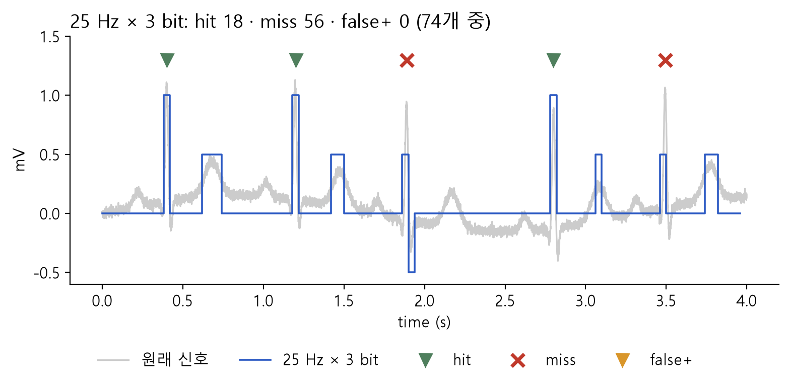
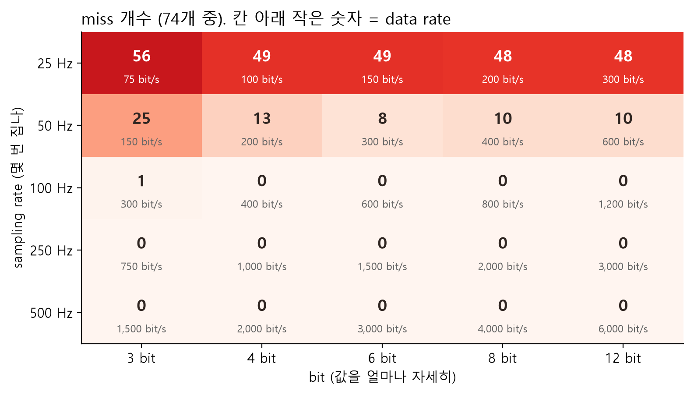
결과가 뜻하는 것. 25 Hz 줄은 bit를 3에서 12로 올려도 miss가 56 → 48로 조금 줄 뿐입니다. 100 Hz부터는 4 bit로도 하나도 안 놓칩니다. 이 판정에서는 sampling rate가 먼저이고 bit는 덜 중요합니다.
관찰 적기 (완료 조건)
할 일 연구 노트(새 탭으로 열림)나 메모장에 아래 두 질문의 답을 먼저 내 말로 적고, 그다음 "정답 보기"를 눌러 비교합니다.
질문 1. miss가 0이 되는 가장 작은 data rate는? ______ bit/s (설정: ___ Hz × ___ bit)
400 bit/s (100 Hz × 4 bit). 그림 8에서 0인 칸 중 data rate가 가장 작은 칸입니다. 바로 왼쪽 100 Hz × 3 bit(300 bit/s)는 1개를 놓칩니다.
질문 2. 25 Hz에서는 bit를 12까지 올려도 miss가 48개나 됩니다. 왜 bit를 올려도 소용이 없을까요? 힌트: 그림 2와 그림 4를 나란히 봅니다.
25 Hz는 40 ms마다 한 번만 값을 집는데, R 봉우리가 판정 선 위에 있는 시간은 약 20 ms뿐입니다. 그래서 박동의 절반 넘게 점이 그 20 ms를 비켜 가고, 컴퓨터가 가진 숫자에는 봉우리가 아예 없습니다(그림 2 오른쪽).
bit는 집은 값을 얼마나 자세히 적느냐입니다(그림 4). 봉우리 옆의 낮은 값을 아무리 자세히 적어도 낮은 값일 뿐입니다. 집지 못한 순간은 자세히 적을 수도 없습니다.
관찰할 점: "무엇을 알아내려 하느냐"가 설정을 정한다. 이 결론은 "박동이 있었나"만 묻기 때문에 나왔습니다. 만약 같은 신호에서 P wave 모양(높이 0.12 mV)까지 보고 싶다면, 실습 3에서 본 것처럼 4 bit의 눈금(250 µV)으로는 P wave가 뭉개집니다. 그때는 bit를 더 올려야 합니다. 정리하면,
| 하고 싶은 일 | 필요한 것 | 예 |
|---|---|---|
| 심박수만 세기 (박동이 있었나) | 봉우리를 놓치지 않는 sampling rate | 100 Hz × 4 bit = 400 bit/s로 충분 |
| 심전도 모양 보기 (P wave까지) | 작은 물결이 눈금 여러 칸이 되는 bit | 같은 100 Hz라도 12 bit = 1,200 bit/s |
그래서 data rate가 작다는 이유만으로 설정을 고르면 안 되고, 먼저 무엇을 판정할지 정해야 합니다.
다음 단계 조건. 실습 4까지 ▷ 실행해 결과 지도를 확인했으면 P1.2로 갑니다. 관찰 질문은 머릿속으로 답해 보고 '정답 보기'로 확인하면 충분합니다(글로 적기는 선택).
P1.2. 기억은 길수록 좋을까
이온 소자를 공부하면 "기억(memory)이 있다"는 말을 자주 봅니다. 앞에 들어온 입력의 흔적이 지금 상태에 남는다는 뜻입니다. P1.2는 이 질문 하나를 봅니다. 흔적이 오래 남을수록 좋을까?
머그컵으로 생각해 보기. 뜨거운 물을 부었다가 버린 머그컵은 한동안 따뜻합니다. 그래서 지금 컵을 만져 보면 "조금 전에 뜨거운 물이 있었구나"를 알 수 있습니다. 컵이 얇은 종이컵이면 금방 식어서 1분만 지나도 알 수 없습니다. 반대로 두꺼운 뚝배기는 하루 종일 미지근해서, 오늘 아침에 부었는지 방금 부었는지 구별이 안 됩니다. 컵의 두께(흔적이 남는 시간)가 알맞아야 "언제 부었는지"를 맞힐 수 있습니다.
P1.2는 이것을 숫자로 해 봅니다. 컵 대신 아주 단순한 수식 모형(R–C)을 쓰고, 뜨거운 물 대신 12칸짜리 입력을 넣습니다.
| 실습 | 하는 일 | 결과로 보는 것 |
|---|---|---|
| 5 | 기억 과제 만들기 | 마지막 4칸의 입력만으로는 구별이 안 된다 |
| 6 | R–C에 넣어 보기 | τ에 따라 마지막 4칸 state에 흔적이 남는다/안 남는다 |
| 7 | readout 채점 | τ에 따른 맞힌 비율: 산 모양 |
실습 5. 기억 과제 만들기 (p1_5_task.py)
"앞에서 무슨 일이 있었는지 기억해야만 풀 수 있는 문제"를 만듭니다. 12칸 입력 중 큰 입력 3번이 앞쪽에 오는 줄(pattern 0)과 가운데에 오는 줄(pattern 1)을 100개씩 만들고, 마지막 4칸은 두 줄 모두 똑같이 작은 입력만 둡니다. 그래서 마지막 4칸만 봐서는 어느 쪽인지 알 수 없습니다. 이 실습은 정말 그런지 그림으로 확인합니다.
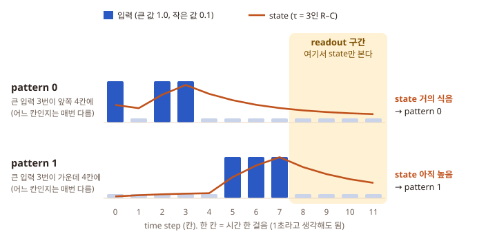
time step (칸): 시간을 일정한 간격으로 자른 한 칸. 여기서는 12칸이고, 한 칸을 1초라고 생각해도 됩니다.
pattern: 12칸 입력의 종류. 큰 입력 3번이 앞쪽 4칸(0–3)에 오면 pattern 0, 가운데 4칸(4–7)에 오면 pattern 1. 4칸 중 어느 3칸인지는 매번 무작위.
trial: 시험 문제 한 개 = 12칸 입력 한 줄. 여기서는 trial 200개.
할 일 mylabs에 새 파일 p1_5_task.py → 붙여 넣기 → Ctrl+S → ▷.
mylabs/p1_5_task.py
# ============================================================
# P1 실습 5 · 기억 과제 만들기: pattern 0과 pattern 1
#
# 전체 과정:
#
# 12칸짜리 입력 한 줄 = trial 하나
# ↓
# pattern 0: 큰 입력(1) 3번이 앞쪽 4칸(0–3) 안에
# pattern 1: 큰 입력(1) 3번이 가운데 4칸(4–7) 안에
# 나머지 칸: 작은 입력(0.1) + 모든 칸에 작은 흔들림(noise)
# ↓
# trial 200개 (pattern마다 100개)
# ↓
# 그래프: 예시 몇 개 + 칸마다 평균
#
# 핵심: 마지막 4칸(8–11, readout 구간)은 두 pattern의 입력이 똑같다.
# 그래서 '마지막 4칸의 입력'만 보면 어느 pattern인지 모른다.
# ============================================================
import numpy as np
import matplotlib.pyplot as plt
# ============================================================
# 0. 그림 설정 — 건드리지 않아도 됩니다
# ============================================================
plt.rcParams.update({
"font.family": "Malgun Gothic", "axes.unicode_minus": False, "font.size": 11,
"legend.frameon": False, "axes.spines.top": False, "axes.spines.right": False,
})
# ============================================================
# 1. 설정값
# ============================================================
N_TRIALS = 200 # 시험 문제 수 (짝수)
N_STEPS = 12 # 한 trial의 칸 수 (time step)
NOISE = 0.03 # 모든 칸에 더하는 작은 흔들림의 크기
SEED = 1
# ============================================================
# 2. trial 만들기
# ============================================================
def make_task(n, seed):
"""입력 U (n × 12)와 정답 y (0 또는 1)를 돌려준다."""
rng = np.random.default_rng(seed)
U = np.full((n, N_STEPS), 0.1) # 처음엔 모든 칸이 작은 입력 0.1
y = np.arange(n) % 2 # 정답: 0, 1, 0, 1, … (반반)
rng.shuffle(y) # 순서를 섞는다
for i in range(n):
start = 0 if y[i] == 0 else 4 # pattern 0 → 0–3칸, pattern 1 → 4–7칸
three = rng.choice(4, 3, replace=False) # 그 4칸 중 무작위 3칸
U[i, start + three] = 1.0 # 큰 입력
U += rng.normal(0, NOISE, U.shape) # 흔들림
return U, y
U, y = make_task(N_TRIALS, SEED)
# ============================================================
# 3. 숫자로 확인
# ============================================================
end = slice(8, 12) # readout 구간: 8, 9, 10, 11칸
print("=" * 50)
print("memory task")
print("=" * 50)
print(f"U shape : {U.shape} (trial {N_TRIALS}개 × 칸 {N_STEPS}개)")
print(f"pattern 0 / 1 : {(y == 0).sum()} / {(y == 1).sum()}")
print(f"first trial : pattern {y[0]}")
print(f" input : {np.round(U[0], 2)}")
print()
print("mean input in the readout steps (8-11):")
print(f" pattern 0 : {U[y == 0][:, end].mean():.3f}")
print(f" pattern 1 : {U[y == 1][:, end].mean():.3f}")
print(" → 거의 같다. 입력만으로는 구별할 수 없다.")
# ============================================================
# 4. 그래프: 위 = pattern별 예시 3개, 아래 = 칸마다 평균
# ============================================================
fig = plt.figure(figsize=(8, 6.2))
gs = fig.add_gridspec(3, 3, height_ratios=[1, 1, 1.25], hspace=0.75, wspace=0.25)
for row, c in enumerate((0, 1)):
idx = np.where(y == c)[0][:3]
for col, i in enumerate(idx):
ax = fig.add_subplot(gs[row, col])
ax.axvspan(7.5, 11.5, color="#fff1d3", zorder=0) # readout 구간
ax.bar(range(N_STEPS), U[i], color=np.where(U[i] > 0.5, "#2b59c3", "#c9d3ea"), width=0.75)
ax.set_ylim(0, 1.2)
ax.set_xticks([0, 4, 8, 11])
ax.set_yticks([0, 1] if col == 0 else [])
ax.set_title(f"pattern {c} · 예 {col + 1}", loc="left", fontsize=10.5)
ax = fig.add_subplot(gs[2, :])
ax.axvspan(7.5, 11.5, color="#fff1d3", zorder=0, label="readout 구간 (8–11)")
ax.plot(range(N_STEPS), U[y == 0].mean(0), "o-", color="#2b59c3", label="pattern 0 평균")
ax.plot(range(N_STEPS), U[y == 1].mean(0), "s--", color="#c0521c", label="pattern 1 평균")
ax.set_xticks(range(N_STEPS))
ax.set_xlabel("time step (칸)")
ax.set_ylabel("평균 입력")
ax.set_ylim(0, 1)
ax.set_title("칸마다 평균: 노란 구간에서는 두 선이 겹친다", loc="left")
ax.legend(loc="upper center", ncol=3, bbox_to_anchor=(0.5, -0.38)) # 범례는 그래프 아래
plt.show()코드에서 볼 곳. 2번 상자의 start = 0 if y[i] == 0 else 4 한 줄이 과제의 전부입니다. 정답 y가 0이면 0–3칸, 1이면 4–7칸 중 무작위 3칸에 큰 입력 1.0을 넣습니다. 나머지는 0.1이고, 모든 칸에 작은 흔들림(noise)을 더합니다.
▷ 실행하면:
PS C:\Users\내이름\Desktop\ion-projects-code> & python mylabs/p1_5_task.py
==================================================
memory task
==================================================
U shape : (200, 12) (trial 200개 × 칸 12개)
pattern 0 / 1 : 100 / 100
first trial : pattern 1
input : [0.08 0.07 0.11 0.09 0.18 1.06 0.99 0.99 0.15 0.04 0.09 0.13]
mean input in the readout steps (8-11):
pattern 0 : 0.097
pattern 1 : 0.100
→ 거의 같다. 입력만으로는 구별할 수 없다.
PS C:\Users\내이름\Desktop\ion-projects-code>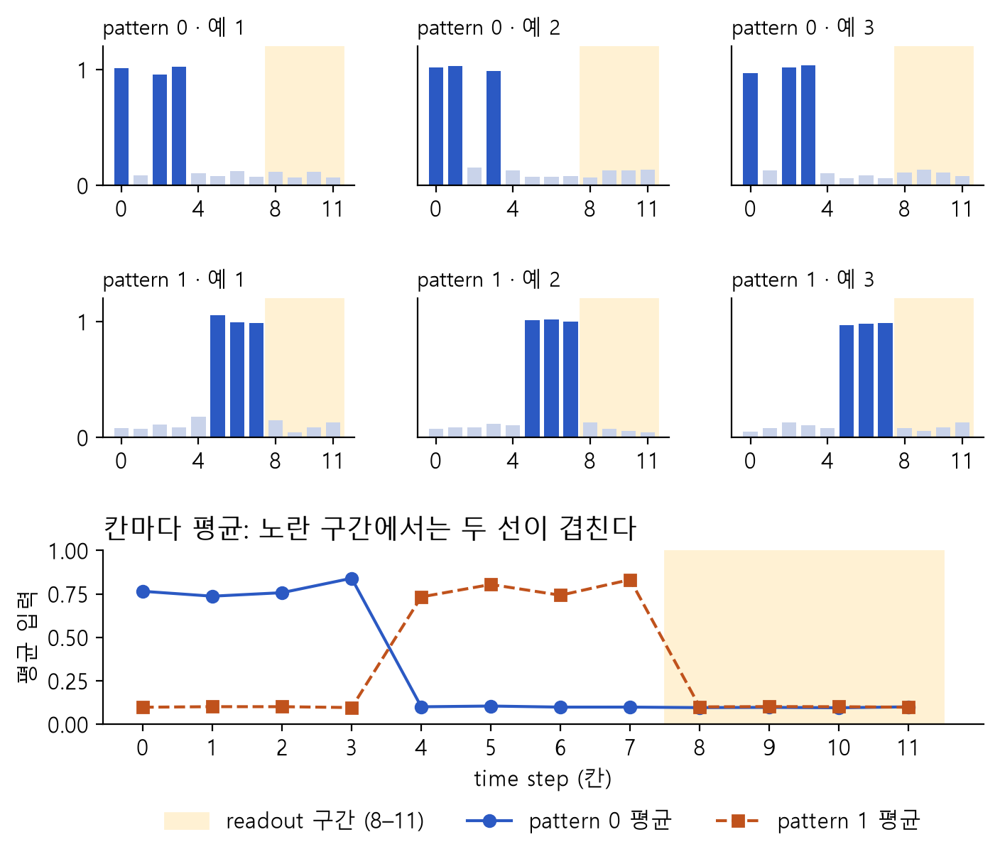
결과가 뜻하는 것. TERMINAL의 마지막 줄처럼 readout 구간의 평균 입력은 0.097과 0.100으로 같습니다. 입력만 보는 방법으로는 이 문제를 못 풉니다. 풀려면 앞쪽에 무슨 일이 있었는지 기억하는 무언가가 필요합니다.
실습 6. R–C 하나에 넣어 보기: 흔적이 남을까 (p1_6_rc.py)
실습 5의 입력을 R–C 라는 가장 단순한 기억 모형에 한 칸씩 넣고, 칸마다 모형의 state(머그컵의 지금 온도)를 그립니다. 그리고 흔적이 남는 시간 τ를 바꿔 가며, 마지막 4칸에서 두 pattern의 state가 벌어지는지 봅니다. 벌어지면 다음 실습에서 맞힐 수 있습니다.
R–C: 저항(R, resistor)과 capacitor(C, 전기를 담는 부품) 하나씩으로 된 가장 단순한 회로. capacitor는 물통처럼 전기를 채웠다가 저항을 통해 천천히 내보내므로, 입력이 지나간 뒤에도 잠시 값이 남습니다. 이온 소자의 "흔적"을 가장 단순하게 흉내 낸 모형이라 기준으로 씁니다.
state: 모형이 지금 들고 있는 값(머그컵의 지금 온도). 입력이 들어올 때마다 바뀝니다.
time constant τ (타우): 흔적이 얼마나 오래 남는지(단위: 칸). 컵의 두께. 그림 11처럼 τ = 0.3칸은 바로 사라지고, τ = 3칸은 몇 칸 동안 남고, τ = 100칸은 아주 조금 오르고 오래 남습니다.
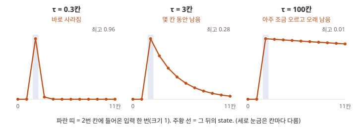
할 일 mylabs에 새 파일 p1_6_rc.py → 붙여 넣기 → Ctrl+S → ▷.
mylabs/p1_6_rc.py
# ============================================================
# P1 실습 6 · R–C 하나에 넣어 보기: 흔적이 남을까
#
# 전체 과정:
#
# 실습 5와 같은 trial 200개
# ↓
# R–C 하나에 한 칸씩 차례로 넣기
# state(다음) = a × state(지금) + (1 − a) × 입력
# a = e^(−1/TAU) ← TAU가 클수록 a가 1에 가까워 천천히 변함
# ↓
# 그래프: 입력 막대 위에 state 곡선
# pattern 0과 1의 평균 state가 readout 구간(8–11)에서 벌어지나?
#
# 맨 위의 TAU를 0.3 → 3 → 100으로 바꿔 Run 해 보세요.
# ============================================================
import numpy as np
import matplotlib.pyplot as plt
# ============================================================
# 0. 그림 설정 — 건드리지 않아도 됩니다
# ============================================================
plt.rcParams.update({
"font.family": "Malgun Gothic", "axes.unicode_minus": False, "font.size": 11,
"legend.frameon": False, "axes.spines.top": False, "axes.spines.right": False,
})
# ============================================================
# 1. 바꿔 볼 수 있는 설정값 ← 여기를 바꿔 보세요
# ============================================================
TAU = 3.0 # time constant τ (칸). 흔적이 얼마나 오래 남나. 0.3, 1, 3, 10, 100 …
N_TRIALS = 200
SEED = 1
# ============================================================
# 2. trial 만들기 (실습 5와 같은 코드)
# ============================================================
def make_task(n, seed, n_steps=12, noise=0.03):
rng = np.random.default_rng(seed)
U = np.full((n, n_steps), 0.1)
y = np.arange(n) % 2
rng.shuffle(y)
for i in range(n):
start = 0 if y[i] == 0 else 4
U[i, start + rng.choice(4, 3, replace=False)] = 1.0
U += rng.normal(0, noise, U.shape)
return U, y
U, y = make_task(N_TRIALS, SEED)
# ============================================================
# 3. R–C 하나 (머그컵 하나)
# ============================================================
#
# 매 칸마다:
# state = a × (지난 state) + (1 − a) × (지금 입력)
#
# a가 1에 가까우면 (TAU 큼): 지난 state를 거의 그대로 들고 감 → 천천히 변함
# a가 0에 가까우면 (TAU 작음): 지난 state를 거의 버림 → 지금 입력만 따라감
#
# TAU = 3이면 a = e^(−1/3) ≈ 0.72 : 한 칸 지날 때마다 흔적의 72%가 남음
# ============================================================
def run_rc(U, tau):
a = np.exp(-1.0 / tau)
X = np.zeros_like(U) # 칸마다의 state를 모아 둘 곳
state = np.zeros(len(U)) # 처음 state = 0 (모든 trial 동시에 계산)
for k in range(U.shape[1]): # 0칸, 1칸, … 11칸 차례로
state = a * state + (1 - a) * U[:, k]
X[:, k] = state
return X
X = run_rc(U, TAU)
# ============================================================
# 4. 숫자로 확인: readout 구간에서 두 pattern의 state 차이
# ============================================================
end = slice(8, 12)
s0 = X[y == 0][:, end].mean()
s1 = X[y == 1][:, end].mean()
print("=" * 50)
print(f"R-C, tau = {TAU:g} steps (a = {np.exp(-1 / TAU):.3f})")
print("=" * 50)
print("mean state in the readout steps (8-11):")
print(f" pattern 0 : {s0:.4f}")
print(f" pattern 1 : {s1:.4f}")
print(f" difference (1 - 0) : {s1 - s0:+.4f}")
print(f" difference / size : {(s1 - s0) / max(abs(s0), abs(s1)):.0%}")
# ============================================================
# 5. 그래프: 위 = trial 하나씩 (입력 막대 + state 선), 아래 = 평균 state
# ============================================================
fig = plt.figure(figsize=(8, 6.0))
gs = fig.add_gridspec(2, 2, height_ratios=[1, 1.15], hspace=0.6, wspace=0.25)
for col, c in enumerate((0, 1)):
i = np.where(y == c)[0][0]
ax = fig.add_subplot(gs[0, col])
ax.axvspan(7.5, 11.5, color="#fff1d3", zorder=0)
ax.bar(range(12), U[i], color="#c9d3ea", width=0.75, label="입력")
ax.plot(range(12), X[i], "o-", color="#c0521c", lw=2, ms=4, label="state")
ax.set_ylim(0, 1.15)
ax.set_xticks([0, 4, 8, 11])
ax.set_title(f"pattern {c}의 trial 하나", loc="left", fontsize=10.5)
if col == 0:
ax.legend(loc="upper right")
ax = fig.add_subplot(gs[1, :])
ax.axvspan(7.5, 11.5, color="#fff1d3", zorder=0, label="readout 구간")
m0, m1 = X[y == 0].mean(0), X[y == 1].mean(0)
ax.plot(range(12), m0, "o-", color="#2b59c3", label="pattern 0 평균 state")
ax.plot(range(12), m1, "s--", color="#c0521c", label="pattern 1 평균 state")
ax.set_ylim(0, max(m0.max(), m1.max()) * 1.15)
ax.set_xticks(range(12))
ax.set_xlabel("time step (칸)")
ax.set_ylabel("state")
ax.set_title(f"τ = {TAU:g}칸: 노란 구간에서 두 선이 얼마나 벌어졌나", loc="left")
ax.legend(loc="upper center", ncol=3, bbox_to_anchor=(0.5, -0.32))
plt.show()코드에서 볼 곳. 3번 상자의 한 줄 state = a * state + (1 - a) * U[:, k]가 R–C 전부입니다. "지난 state의 a만큼 + 지금 입력의 (1 − a)만큼". τ = 3이면 a ≈ 0.72라서 한 칸 지날 때마다 흔적의 72%가 남습니다. τ가 크면 a가 1에 가까워 거의 안 변하고, τ가 작으면 a가 0에 가까워 지금 입력만 따라갑니다.
▷ 실행하면 (TAU = 3):
PS C:\Users\내이름\Desktop\ion-projects-code> & python mylabs/p1_6_rc.py
==================================================
R-C, tau = 3 steps (a = 0.717)
==================================================
mean state in the readout steps (8-11):
pattern 0 : 0.1572
pattern 1 : 0.3328
difference (1 - 0) : +0.1756
difference / size : 53%
PS C:\Users\내이름\Desktop\ion-projects-code>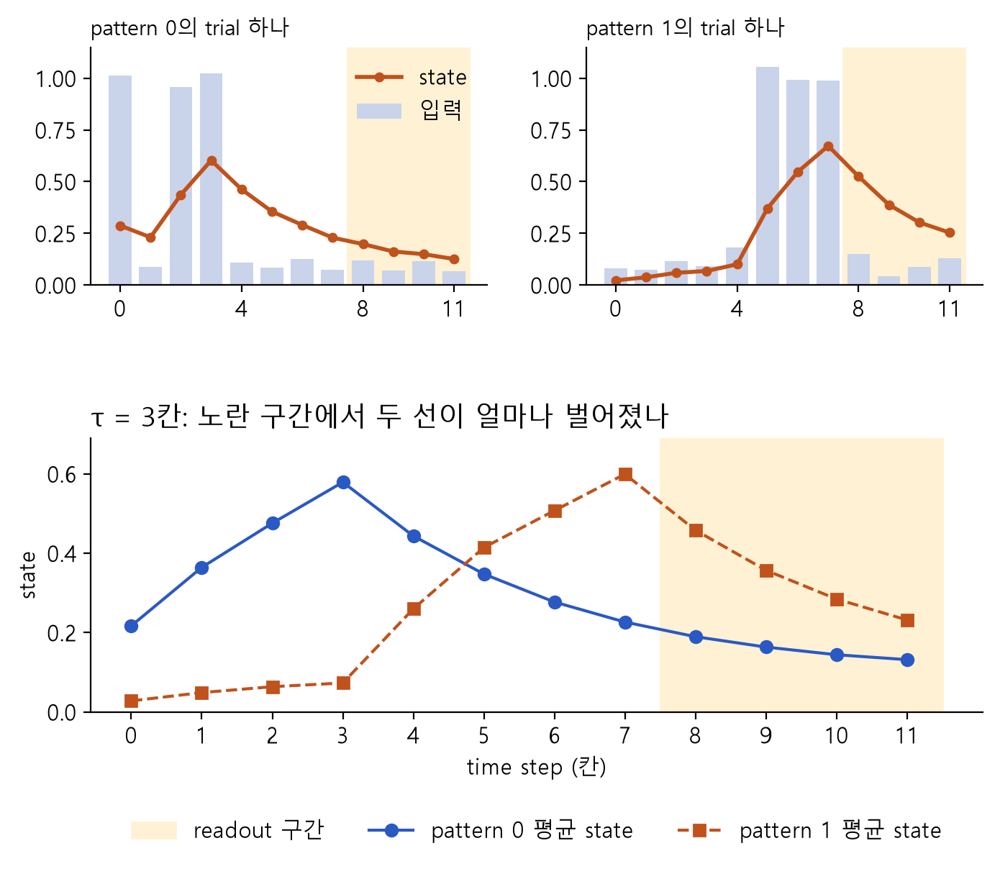
결과가 뜻하는 것. τ = 3에서 readout 구간의 평균 state가 0.16 대 0.33으로 두 배 차이납니다. 입력은 같았는데 state는 다르다, 이것이 기억(memory)입니다.
TAU = 3.0을 0.3, 그다음 100.0으로 바꿔 ▷. 노란 구간에서 두 선의 간격이 어떻게 되나요? TERMINAL의 difference / size도 봅니다.
- τ = 0.3 (종이컵): state가 입력을 바로 따라가고 바로 잊어서, 노란 구간에서 두 선이 거의 겹칩니다. 차이 9%.
- τ = 100 (뚝배기): state가 아주 천천히 쌓이기만 합니다. 큰 입력이 앞쪽에 왔든 가운데 왔든 "큰 입력 3번의 합"은 같아서 두 선이 붙어 있습니다. 차이 3%.
- τ = 3: 차이 53%. 가운데 τ만 흔적이 남으면서도 구별됩니다.
실습 7. readout 채점: 마지막 4칸만 보고 맞힐 수 있나 (p1_7_readout.py)
실습 6에서 눈으로 본 "벌어짐"을 숫자(맞힌 비율)로 바꿉니다. 마지막 4칸의 state만 보고 pattern을 맞히는 규칙(readout)을 연습 문제로 정하고, 처음 보는 시험 문제로 채점합니다. 이것을 τ 다섯 개에 대해 반복해서, τ에 따른 맞힌 비율을 한 장의 그래프로 그립니다. 이 그래프가 P1.2의 최종 결과입니다.
readout: state를 읽어서 답을 내는 일. 여기서는 "마지막 4칸 state에 각각 무게(weight)를 곱해 더한 값이 0보다 크면 pattern 1". 무게는 연습 문제의 정답에 가장 잘 맞도록 컴퓨터가 정합니다.
balanced accuracy: 맞힌 비율. 단, pattern 0 문제와 pattern 1 문제를 따로 채점해서 평균을 냅니다. 예: pattern 0은 100개 중 90개, pattern 1은 100개 중 98개 맞히면 (0.90 + 0.98) ÷ 2 = 0.94. 따로 채점하면, 한쪽 답만 계속 찍는 꼼수가 1.0과 0.0의 평균 0.5로 들통납니다.
chance: 아무 생각 없이 찍을 때의 점수. 답이 둘이니 0.50. 0.50 근처 = 못 맞힌다, 1.00 = 다 맞힌다.
할 일 mylabs에 새 파일 p1_7_readout.py → 붙여 넣기 → Ctrl+S → ▷. 계산이 몇 초 걸립니다.
mylabs/p1_7_readout.py
# ============================================================
# P1 실습 7 · readout 채점: 마지막 4칸 state만 보고 맞힐 수 있나
#
# 전체 과정:
#
# 실습 5의 trial 200개 → 실습 6의 R–C에 넣기 (τ 하나)
# ↓
# 마지막 4칸(8–11)의 state 4개만 꺼내기
# + 측정기 오차(readout noise) 더하기
# ↓
# readout = "state 4개에 무게를 곱해 더한 값이 0보다 크면 pattern 1"
# 무게(weight)는 연습 문제로 정한다 (선형 분류, ridge)
# ↓
# 5-fold cross-validation: 연습 160개 / 시험 40개를 다섯 번 바꿔 가며
# ↓
# balanced accuracy (맞힌 비율) + label shuffle (정답지 섞기 점검)
# ↓
# τ를 여러 개로 반복 → [그림] τ에 따른 맞힌 비율 (산 모양?)
# ============================================================
import numpy as np
import matplotlib.pyplot as plt
# ============================================================
# 0. 그림 설정 — 건드리지 않아도 됩니다
# ============================================================
plt.rcParams.update({
"font.family": "Malgun Gothic", "axes.unicode_minus": False, "font.size": 11,
"legend.frameon": False, "axes.spines.top": False, "axes.spines.right": False,
})
# ============================================================
# 1. 바꿔 볼 수 있는 설정값 ← 여기를 바꿔 보세요
# ============================================================
TAUS = [0.3, 1, 3, 10, 100] # 비교할 τ 목록 (칸)
NOISE = 0.01 # readout noise: state를 읽을 때 생기는 오차의 크기
N_TRIALS = 200
SEED = 1
# ============================================================
# 2. trial 만들기 · R–C (실습 5·6과 같은 코드)
# ============================================================
def make_task(n, seed, n_steps=12, noise=0.03):
rng = np.random.default_rng(seed)
U = np.full((n, n_steps), 0.1)
y = np.arange(n) % 2
rng.shuffle(y)
for i in range(n):
start = 0 if y[i] == 0 else 4
U[i, start + rng.choice(4, 3, replace=False)] = 1.0
U += rng.normal(0, noise, U.shape)
return U, y
def run_rc(U, tau):
a = np.exp(-1.0 / tau)
X = np.zeros_like(U)
state = np.zeros(len(U))
for k in range(U.shape[1]):
state = a * state + (1 - a) * U[:, k]
X[:, k] = state
return X
# ============================================================
# 3. readout: 선형 분류 (ridge)
# ============================================================
#
# 점수 = w1·state8 + w2·state9 + w3·state10 + w4·state11 + b
# 점수 > 0 이면 pattern 1, 아니면 pattern 0
#
# 무게 w는 '연습 문제'의 정답에 가장 잘 맞게 정한다 (최소제곱 + 작은 벌점 LAM).
# 그 전에 연습 문제 기준으로 칸마다 평균 0, 크기 1로 맞춘다 (standardization).
# 시험 문제의 정답은 무게를 정할 때 절대 보지 않는다.
# ============================================================
LAM = 1.0
def fit(F, y):
mu, sd = F.mean(0), F.std(0) + 1e-12
A = np.hstack([(F - mu) / sd, np.ones((len(F), 1))]) # 마지막 열 = b
target = 2.0 * y - 1 # 정답 0/1 → −1/+1
w = np.linalg.solve(A.T @ A + LAM * np.eye(A.shape[1]), A.T @ target)
return mu, sd, w
def predict(model, F):
mu, sd, w = model
A = np.hstack([(F - mu) / sd, np.ones((len(F), 1))])
return (A @ w > 0).astype(int)
def balanced_accuracy(pred, y):
"""pattern 0 문제와 pattern 1 문제를 따로 채점해서 평균"""
return np.mean([np.mean(pred[y == c] == c) for c in (0, 1)])
# ============================================================
# 4. 5-fold cross-validation
# ============================================================
#
# 200문제를 다섯 묶음으로 나눈다 (묶음마다 pattern 0·1 반반).
# 묶음 하나를 시험, 나머지 넷을 연습 → 다섯 번 → 점수 다섯 개의 평균.
# ============================================================
def cross_validate(F, y, seed, folds=5):
rng = np.random.default_rng(seed)
i0 = rng.permutation(np.where(y == 0)[0])
i1 = rng.permutation(np.where(y == 1)[0])
parts = [np.concatenate([i0[f::folds], i1[f::folds]]) for f in range(folds)]
scores = []
for f in range(folds):
test = parts[f]
train = np.concatenate([parts[g] for g in range(folds) if g != f])
model = fit(F[train], y[train])
scores.append(balanced_accuracy(predict(model, F[test]), y[test]))
return np.mean(scores), np.std(scores)
# ============================================================
# 5. 모형마다 채점
# ============================================================
U, y = make_task(N_TRIALS, SEED)
rng = np.random.default_rng(SEED + 7)
end = slice(8, 12)
def readout_features(X):
"""마지막 4칸 state + 측정기 오차"""
return X[:, end] + rng.normal(0, NOISE, X[:, end].shape)
models = [("no memory", "-", U)] # state = 지금 입력
models += [("R-C", f"tau = {tau:g}", run_rc(U, tau)) for tau in TAUS]
print("=" * 60)
print(f"readout = last 4 steps, readout noise {NOISE}, chance = 0.50")
print("=" * 60)
print()
print("model setting balanced +/- label")
print(" accuracy shuffle")
print("--------- --------- --------- ---- -------")
results = []
for name, setting, X in models:
F = readout_features(X)
acc, sd = cross_validate(F, y, SEED)
# label shuffle: 정답지를 무작위로 섞고 똑같이 → 0.5 근처가 정상 (20번 평균)
shuffled = np.mean([cross_validate(F, rng.permutation(y), SEED)[0] for _ in range(20)])
results.append((name, setting, acc, sd, shuffled))
print(f"{name:<9} {setting:<9} {acc:.2f} {sd:.2f} {shuffled:.2f}")
# ============================================================
# 6. [그림] τ에 따른 맞힌 비율
# ============================================================
rc = [r for r in results if r[0] == "R-C"]
fig, ax = plt.subplots(figsize=(8, 4.2))
ax.axhline(0.5, color="0.75", lw=1, ls=":", label="chance 0.50 (찍기)")
ax.axhline(results[0][2], color="0.45", ls="--", lw=1.2, label=f"no memory {results[0][2]:.2f}")
ax.errorbar(TAUS, [r[2] for r in rc], yerr=[r[3] for r in rc], fmt="o-", color="#2b59c3",
lw=2, ms=7, capsize=3, label="R–C (τ마다 한 점)")
ax.set_xscale("log")
ax.set_xticks(TAUS, [f"{t:g}" for t in TAUS])
ax.minorticks_off()
ax.set_ylim(0.4, 1.05)
ax.set_xlabel("R–C time constant τ (칸, 로그 눈금)")
ax.set_ylabel("balanced accuracy")
ax.set_title(f"마지막 4칸 state만 보고 맞힌 비율 (readout noise {NOISE})", loc="left")
fig.tight_layout(rect=(0, 0.08, 1, 1))
fig.legend(*ax.get_legend_handles_labels(), loc="lower center", ncol=3)
plt.show()코드에서 볼 곳.
- 3번 상자
fit·predict: 연습 문제로 무게를 정하고(fit), 시험 문제에 그 무게를 곱해 답을 냅니다(predict). 시험 문제의 정답은 무게를 정할 때 절대 보지 않습니다. 보면 시험 문제를 미리 보고 공부한 것과 같아 점수가 부풉니다. - 4번 상자
cross_validate: 200문제를 다섯 묶음으로 나눠 넷으로 연습, 하나로 시험을 다섯 번 바꿔 가며 해서 점수 다섯 개의 평균을 냅니다(cross-validation). 표의+/-는 그 다섯 점수가 서로 얼마나 달랐는지입니다. - 5번 상자의 label shuffle: 정답지를 일부러 무작위로 섞고 똑같이 채점하는 점검입니다. 정답이 엉망이니 0.50 근처가 나와야 정상이고, 높게 나오면 코드 어딘가에서 정답이 새고 있다는 경고입니다.
readout_features: state를 읽을 때 작은 오차(NOISE = 0.01)를 더합니다. 실제 측정기는 값을 읽을 때 늘 조금씩 흔들리므로 그것을 흉내 냅니다(readout noise).
▷ 실행하면:
PS C:\Users\내이름\Desktop\ion-projects-code> & python mylabs/p1_7_readout.py
============================================================
readout = last 4 steps, readout noise 0.01, chance = 0.50
============================================================
model setting balanced +/- label
accuracy shuffle
--------- --------- --------- ---- -------
no memory - 0.55 0.04 0.50
R-C tau = 0.3 0.67 0.03 0.50
R-C tau = 1 0.95 0.04 0.46
R-C tau = 3 1.00 0.00 0.50
R-C tau = 10 1.00 0.00 0.52
R-C tau = 100 0.59 0.04 0.51
PS C:\Users\내이름\Desktop\ion-projects-code>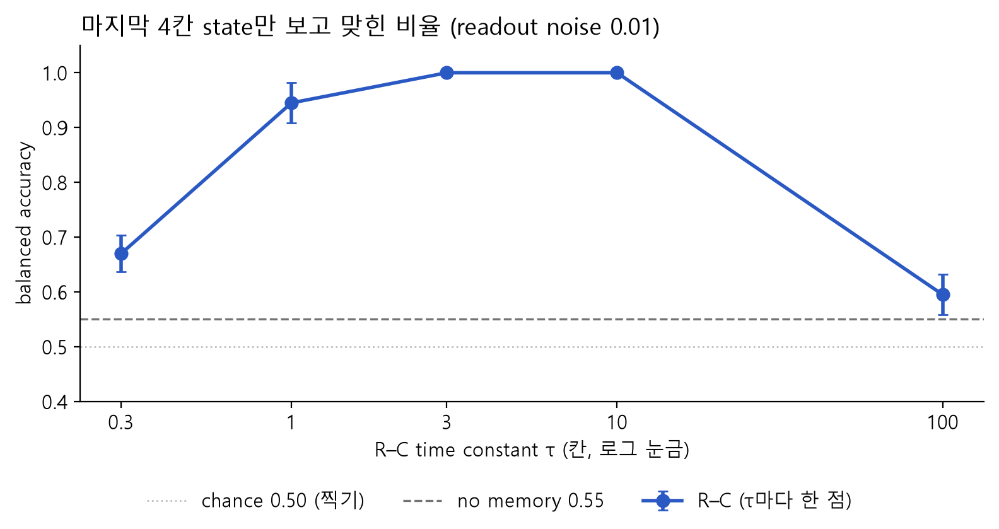
결과가 뜻하는 것. 표를 한 줄씩 읽으면 이렇습니다.
| 열 이름 | 뜻 | R-C tau = 1 줄의 값 |
|---|---|---|
| model / setting | 어떤 모형, 어떤 설정 | R–C, τ = 1칸 |
| balanced accuracy | 마지막 4칸 state만 보고 맞힌 비율 | 0.95 = 100문제 중 약 95문제 |
| +/- | 다섯 번 시험 점수가 서로 얼마나 달랐나 | 0.04 |
| label shuffle | 정답지를 섞고 똑같이 했을 때 (점검) | 0.46 → 0.50 근처라 정상 |
no memory가 0.55로 찍기 수준인 것은 당연합니다(실습 5: 마지막 4칸 입력은 같으니까). R–C는 τ = 3·10칸에서 1.00으로 다 맞히지만, 너무 짧은 τ(0.3)와 너무 긴 τ(100)에서는 떨어집니다.
NOISE = 0.01을 0.05(측정 오차 다섯 배)로 바꿔 ▷. 산이 어떻게 변할까요?
산이 좁아집니다. τ = 10칸이 1.00 → 0.89로 떨어지고, 산꼭대기는 τ = 3 근처만 남습니다. 측정 오차가 커지면 "조금 벌어진" 정도로는 구별이 안 되고, 확실히 벌어지는 τ만 살아남기 때문입니다.
PS C:\Users\내이름\Desktop\ion-projects-code> & python mylabs/p1_7_readout.py
============================================================
readout = last 4 steps, readout noise 0.05, chance = 0.50
============================================================
model setting balanced +/- label
accuracy shuffle
--------- --------- --------- ---- -------
no memory - 0.52 0.06 0.50
R-C tau = 0.3 0.57 0.06 0.50
R-C tau = 1 0.93 0.03 0.48
R-C tau = 3 0.99 0.01 0.49
R-C tau = 10 0.89 0.07 0.51
R-C tau = 100 0.52 0.07 0.50
PS C:\Users\내이름\Desktop\ion-projects-code>관찰 적기 (완료 조건)
할 일 연구 노트나 메모장에 먼저 내 말로 적고, 그다음 "정답 보기"를 누릅니다.
질문. 그림 13이 산 모양인 이유는? τ가 너무 짧으면 ______, 너무 길면 ______.
τ가 너무 짧으면 (0.3칸) 흔적이 다음 칸에서 거의 다 사라집니다. 가운데 칸(4–7)의 큰 입력도 readout 구간(8–11)에 오기 전에 식어 버려서, 두 pattern의 state가 겹칩니다(실습 6, τ = 0.3). 그래도 아주 작은 차이가 남아 0.67로 찍기보다는 조금 낫습니다.
τ가 너무 길면 (100칸) state가 아주 천천히 쌓이기만 해서, 큰 입력이 앞쪽에 왔든 가운데 왔든 "큰 입력 3번의 합"이 같아집니다. 뚝배기가 언제 데워졌는지 모르는 것과 같습니다.
가운데 τ (3–10칸)만 가운데 칸의 흔적은 readout까지 남고, 앞쪽 칸의 흔적은 많이 식어서, 두 pattern이 확실히 달라집니다.
관찰할 점. 흔적이 남는다는 것과 이 과제에 쓸모 있는 흔적은 다릅니다. τ가 과제의 시간 규모와 맞아야 합니다.
과제의 시간 규모: "답을 내는 순간이, 단서가 들어온 순간보다 몇 칸 뒤인가"입니다. 이 과제의 단서는 큰 입력의 위치입니다. pattern 1의 큰 입력(4–7칸)은 readout(8–11칸)보다 1–7칸 앞에 있고, pattern 0의 큰 입력(0–3칸)은 5–11칸 앞에 있습니다. 그러니 약 1–10칸 전의 일을 구별해 기억해야 하고, 그래서 τ = 3–10칸이 가장 잘 맞습니다.
다른 과제도 같은 방법으로 잽니다. 예를 들어 "방금 박동 간격이 그 전보다 짧아졌나"를 판정하려면 한 박동 간격(약 0.8초) 전의 일을 기억해야 하므로, 흔적은 약 1초 정도 남아야 합니다.
R–C 하나도 τ만 맞으면 이 과제를 다 맞힙니다. 그래서 실제 이온 소자가 이 과제를 푼다면 다음 질문은 "R–C 하나보다 무엇이 더 나은가"입니다. P2의 control(비교 대상)이 바로 이 질문입니다.
다음 단계 조건. 실습 7까지 ▷ 실행해 산 모양 그림을 확인했으면 P1은 끝입니다. 산 모양의 이유를 한 줄로 말해 보기는 선택입니다. 맨 아래 단추로 완료를 표시합니다. 이어서 P2에서 같은 과제를 "mock 소자(진짜 소자 대신 컴퓨터 속 가짜 소자)"에 넣어 봅니다.
이 프로그램이 단순하게 만든 부분
결과 숫자가 실제 장치와 같지 않은 이유입니다. 지금은 읽고 넘어가도 됩니다.
- P1.1: 실제 심전도 기계는 숫자로 바꾸기 전에 잡음을 거르는 회로(filter)를 거치고, 박동도 신호 크기에 맞춰 선을 바꿔 가며 찾습니다. 이 코드는 둘 다 없이 가장 단순한 방법(고정된 0.5 mV 선)만 씁니다. 그래서 숫자 자체보다 "sampling rate를 낮추면 miss가 급격히 는다" 같은 경향을 봅니다.
- P1.2: 진짜 소자나 회로가 아니라 수식 한 줄로 만든 모형입니다. readout noise가 없으면 아주 작은 차이도 구별되어 τ = 100도 높은 점수가 나오므로, 실제 측정처럼 작은 오차를 일부러 넣었습니다.
- 실습 코드의 완성본은
ion-projects-code\labs폴더에 같은 이름으로 들어 있습니다. 내 파일이 이상하게 동작하면 그 파일을 열어 비교하거나 그대로 ▷ 해 봅니다.